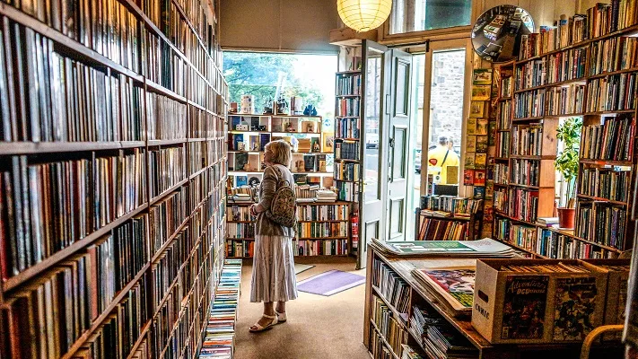

Nossa História MagicBook!
 O MagicBook fornece uma maneira poderosa de ajudá-lo a provar seu argumento. Ao clicar em Vídeo Online, você pode colar o código de inserção do vídeo que deseja adicionar. Você também pode digitar uma palavra-chave para pesquisar online o vídeo mais adequado ao seu documento. Para dar ao documento uma aparência profissional, o Word fornece designs de cabeçalho, rodapé, folha de rosto e caixa de texto que se complementam entre si.
Por exemplo, você pode adicionar uma folha de rosto, um cabeçalho e uma barra lateral correspondentes. Clique em Inserir e escolha os elementos desejados nas diferentes galerias. Temas e estilos também ajudam a manter seu documento coordenado. Quando você clica em Design e escolhe um novo tema, as imagens, gráficos e elementos gráficos SmartArt são alterados para corresponder ao novo tema.
Quando você aplica estilos, os títulos são alterados para coincidir com o novo tema. Economize tempo no Word com novos botões que são mostrados no local em que você precisa deles. Para alterar a maneira como uma imagem se ajusta ao seu documento, clique nela e um botão de opções de layout será exibido ao lado. Ao trabalhar em uma tabela, clique no local onde deseja adicionar uma linha ou uma coluna e clique no sinal de adição.
A leitura também é mais fácil no novo modo de exibição de Leitura. Você pode recolher partes do documento e colocar o foco no texto desejado. Se for preciso interromper a leitura antes de chegar ao fim dela, o Word lembrará em que ponto você parou - até mesmo em outro dispositivo. O vídeo fornece uma maneira poderosa de ajudá-lo a provar seu argumento.
Ao clicar em Vídeo Online, você pode colar o código de inserção do vídeo que deseja adicionar. Você também pode digitar uma palavra-chave para pesquisar online o vídeo mais adequado ao seu documento. Para dar ao documento uma aparência profissional, o Word fornece designs de cabeçalho, rodapé, folha de rosto e caixa de texto que se complementam entre si.
Por exemplo, você pode adicionar uma folha de rosto, um cabeçalho e uma barra lateral correspondentes. Clique em Inserir e escolha os elementos desejados nas diferentes galerias. Temas e estilos também ajudam a manter seu documento coordenado. Quando você clica em Design e escolhe um novo tema, as imagens, gráficos e elementos gráficos SmartArt são alterados para corresponder ao novo tema.
Quando você aplica estilos, os títulos são alterados para coincidir com o novo tema. Economize tempo no Word com novos botões que são mostrados no local em que você precisa deles. Para alterar a maneira como uma imagem se ajusta ao seu documento, clique nela e um botão de opções de layout será exibido ao lado. Ao trabalhar em uma tabela, clique no local onde deseja adicionar uma linha ou uma coluna e clique no sinal de adição.
A leitura também é mais fácil no novo modo de exibição de Leitura. Você pode recolher partes do documento e colocar o foco no texto desejado. Se for preciso interromper a leitura antes de chegar ao fim dela, o Word lembrará em que ponto você parou - até mesmo em outro dispositivo. O vídeo fornece uma maneira poderosa de ajudá-lo a provar seu argumento.